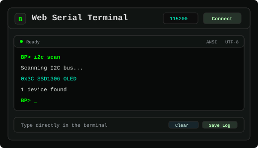
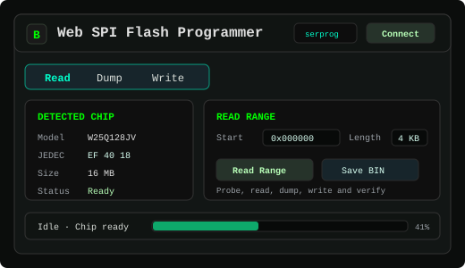
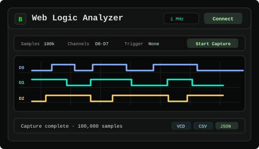
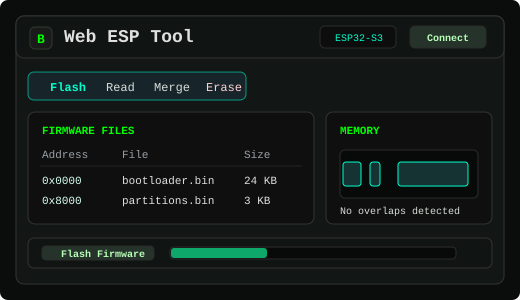
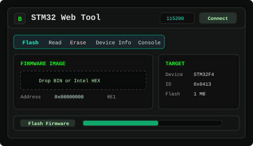
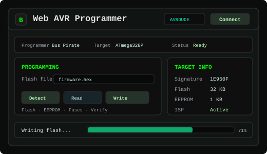
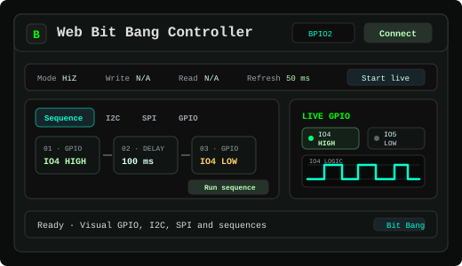
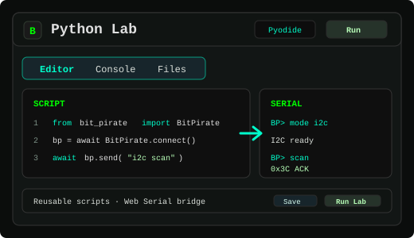
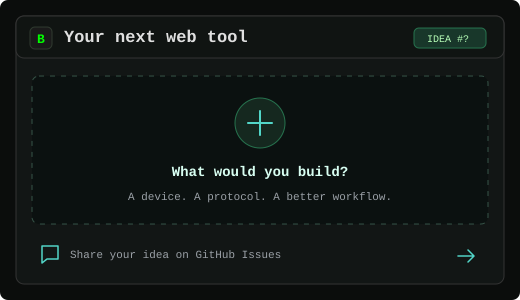

Supported Browsers
Web Serial works in Chrome, Firefox, Edge, Opera and compatible Chromium browsers on desktop. Safari does not currently support Web Serial hardware access.
Cắm cáp USB Type-C vào ESP32 • Sử dụng trình duyệt Chrome hoặc Edge trên máy tính • Bấm mở công cụ bên dưới và chọn cổng COM tương ứng (baudrate mặc định 115200) để bắt đầu làm việc.

Web Serial
Đọc log dữ liệu, gửi câu lệnh và lưu phiên làm việc. Kết nối ESP32, Arduino, Bus Pirate hoặc bất kỳ thiết bị USB-UART/CDC-ACM nào.

SPI Flash
Nhận diện, đọc và ghi chip nhớ SPI NOR Flash (W25Qxx, GD25Qxx...) qua flashrom và adapter serprog. Sao lưu bản dump trực tiếp về máy tính.

SUMP Logic
Thu thập tín hiệu số với phần cứng chuẩn SUMP và phân tích dạng sóng trực quan. Xuất file VCD, CSV, binary thô hoặc JSON.

ESP32-S3 SDR · 2.4 GHz
Bộ thu SDR dải rộng khoảng 2.2–2.8 GHz với biểu đồ phổ và thác nước (waterfall), theo dõi đỉnh xung và phân tích tín hiệu bằng sóng vô tuyến nội bộ của ESP32-S3.

ESP Tool
Nạp firmware, đọc dữ liệu NVS, trích xuất bộ nhớ LittleFS, sao lưu hoặc xóa trắng chip ESP. Ghép nối file nhị phân offline với esptool-js.

STM32 ST-LINK
Nạp file firmware BIN hoặc Intel HEX, sao lưu bộ nhớ và xóa chip STM32. Kết nối qua bootloader ROM UART hoặc adapter ST-Link WebUSB.

AVR ISP
Nhận diện chip ATmega và ATtiny, đọc bộ nhớ và nạp file HEX bằng AVRDUDE WebAssembly qua adapter ESP32 OmniBus AVRDUDE.

Bit Bang · BPIO2
Điều khiển trực quan các chân GPIO, quét địa chỉ thiết bị I2C và trao đổi byte SPI từ xa với phần cứng tương thích BPIO2.

Python · Pyodide
Chạy Python trực tiếp trên trình duyệt bằng Pyodide và điều khiển ESP32 OmniBus qua Web Serial. Viết kịch bản tự động hóa hoặc dùng mẫu có sẵn.

Ý tưởng & Đề xuất
Bạn cần thêm tính năng hoặc hỗ trợ giao thức nào? Mở issue trên GitHub kèm mô tả thiết bị và tài liệu tham khảo.

Analysis follow-up
Use these browser tools after captures, serial logs or firmware reads to inspect bytes, extract ranges, parse structures and study small executable payloads.
These browser tools are built for ESP32 OmniBus workflows, but they also work with other hardware that exposes the same open interfaces and protocol adapters.
Web Serial works in Chrome, Firefox, Edge, Opera and compatible Chromium browsers on desktop. Safari does not currently support Web Serial hardware access.
The operating system must recognize your ESP32 board, USB UART adapter, CDC-ACM device or ESP32 OmniBus USB mode before the browser can request access.
If serial access fails on Linux, grant your user access to the device with sudo setfacl -m u:$USER:rw /dev/ttyACM0, then reconnect the board.
Serial logs, flash data and logic analyzer captures are processed locally by these static pages. The application does not upload captures to a server.
Useful companion projects for extending hardware and automating ESP32 OmniBus workflows.
These tools build on open browser APIs and open-source projects that make this possible.